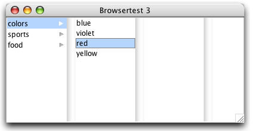

JBrowser roughly implements the look and behaviour of a Mac OS X Cocoa NSBrowser component (aka column view).
Like NSBrowser, JBrowser provides a user interface for displaying and selecting items from a list of data or from hierarchically organized lists of data such as directory paths. When working with a hierarchy of data, the levels are displayed in columns, which are numbered from left to right.
JBrowser uses a TreeModel, and can be used as a replacement for a JTree. It does not have all the features of a JTree though. Especially cell editing is not supported.

JBrowser is designed to work with the Quaqua Look and Feel. If you want to use it with another Look and Feel, you need to implement the user interface delegate BrowserUI, and you need to adapt the ViewportUI. Changes in ViewportUI are needed, in order to draw empty columns at the right of the JBrowser, when the viewport is wider than the currently selected path.
If for some reason, you can't implement the user interface delegate classes BrowserUI and ViewportUI by yourself, you can use the helper class JBrowserViewport, to achieve the desired effect.
The following sample code shows how to use JBrowser without the Quaqua Look and Feel, and without implementig user interface delegates. Note the use of the JBrowserViewport helper class!
|